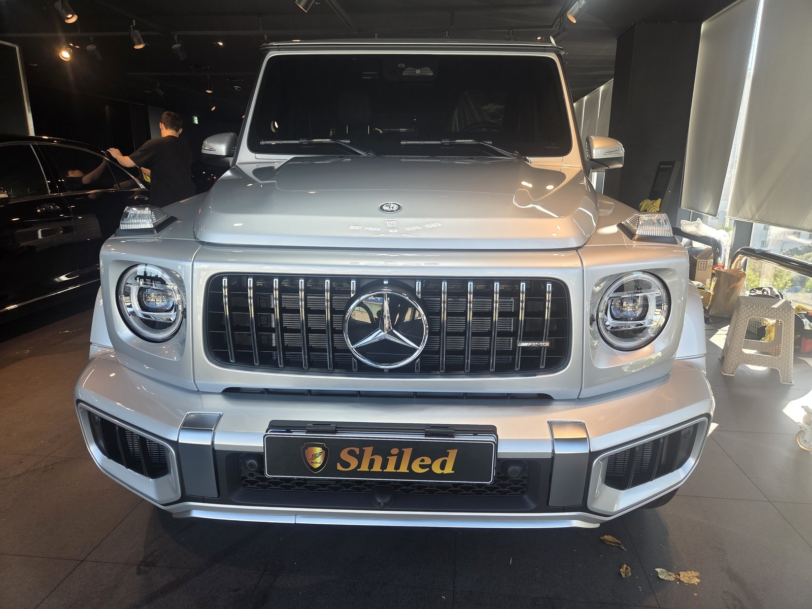
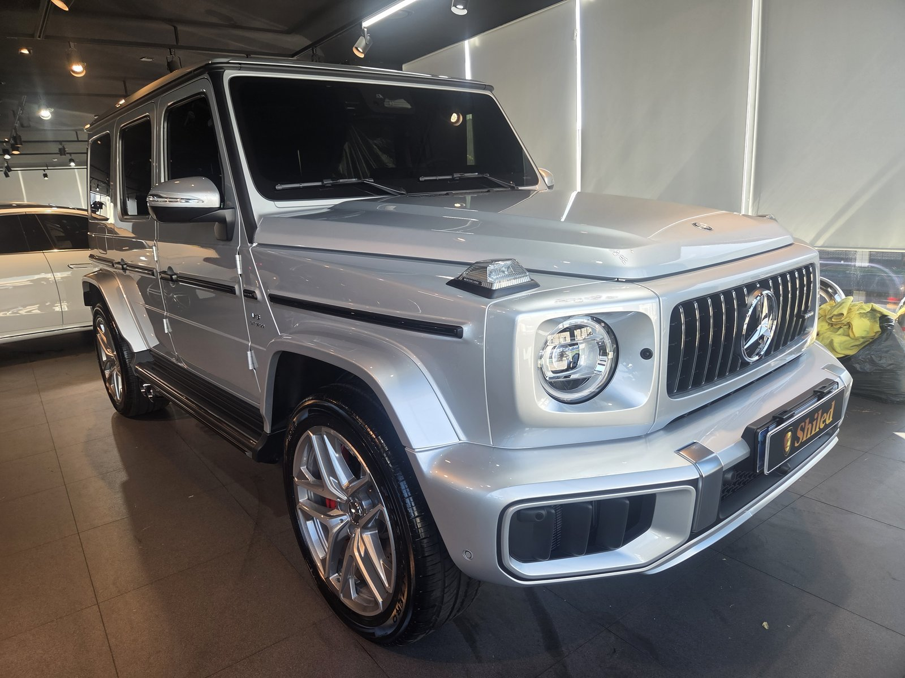
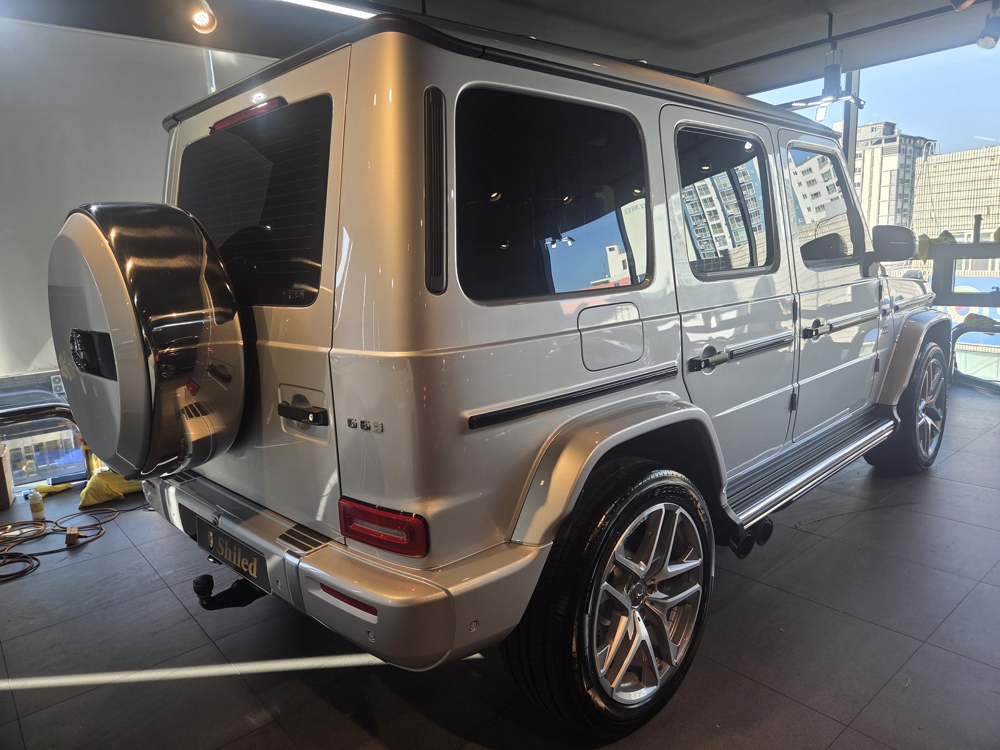
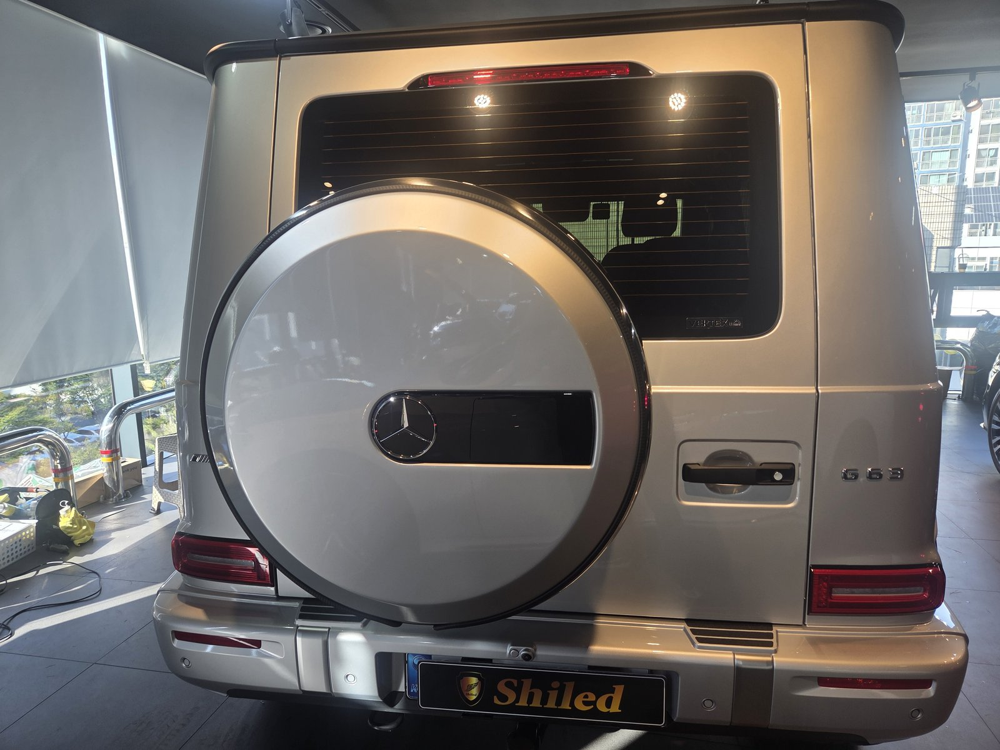
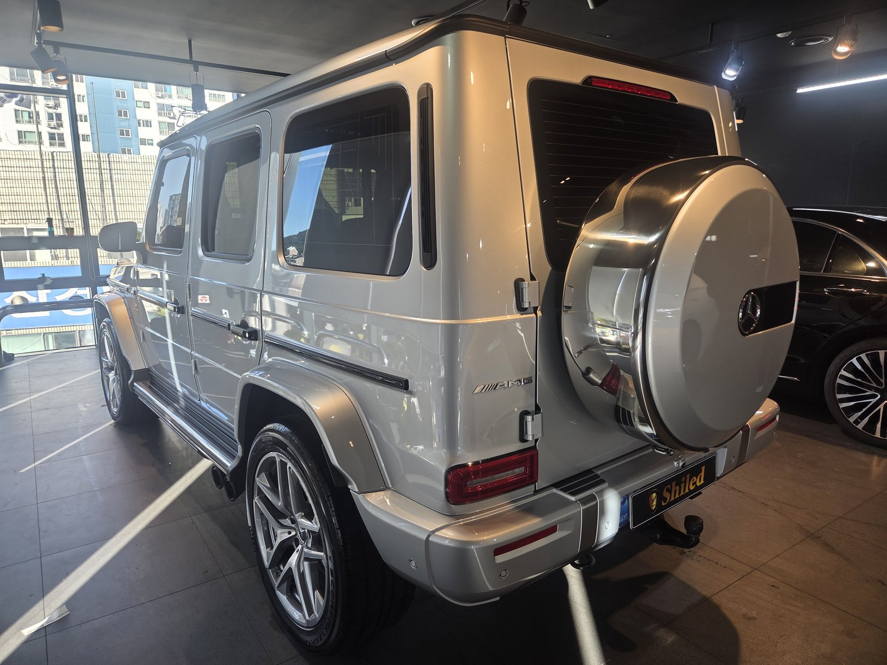
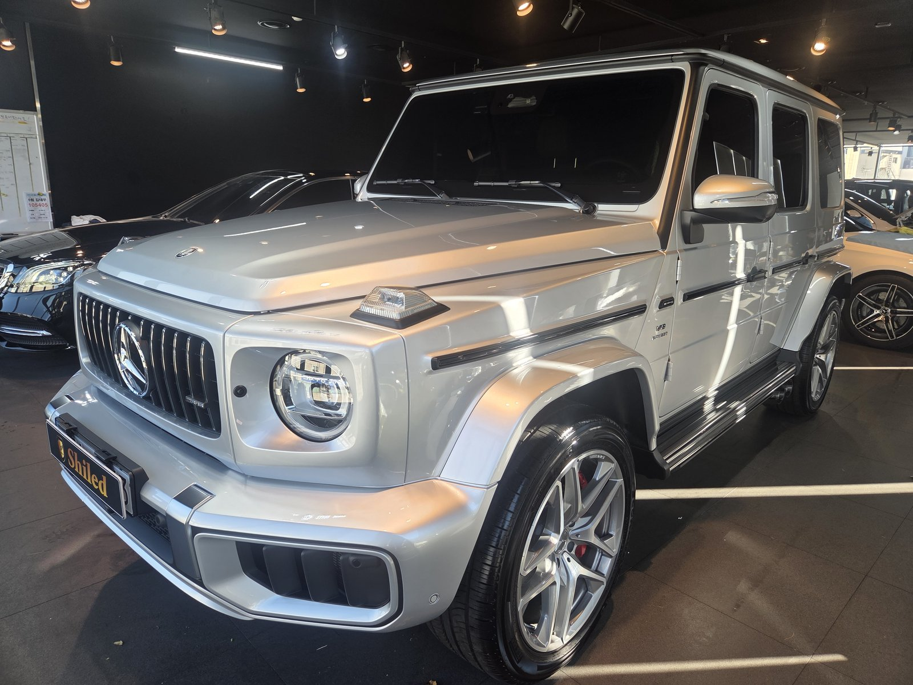
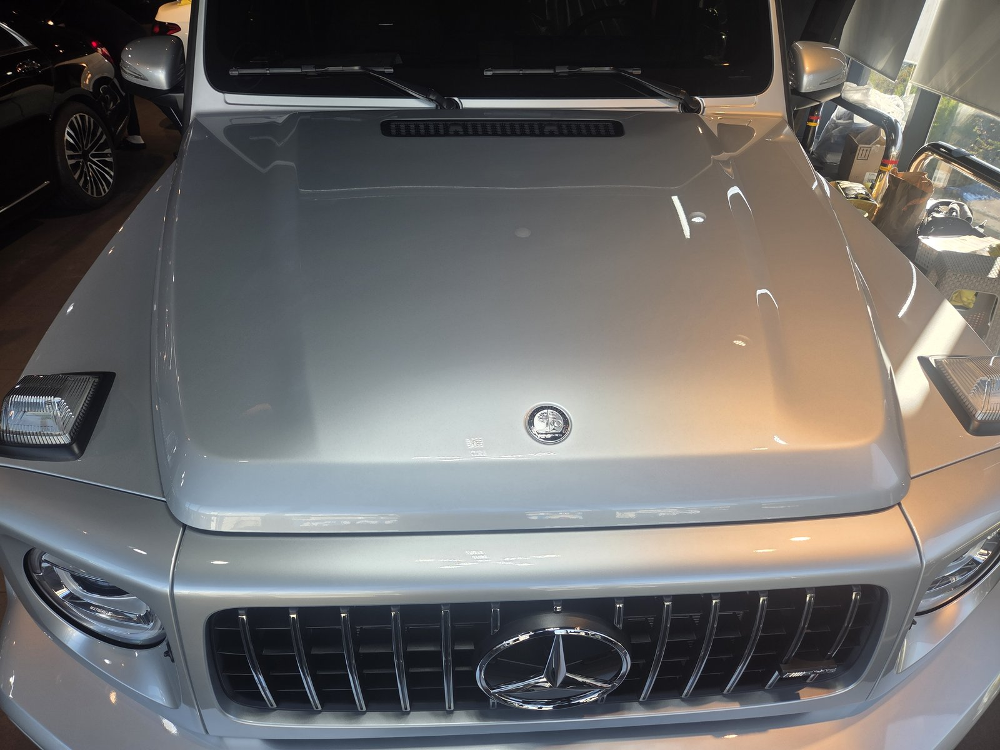
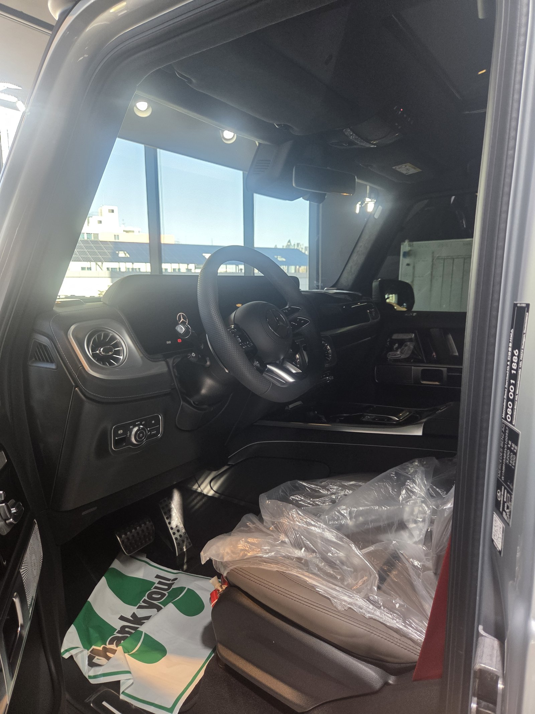
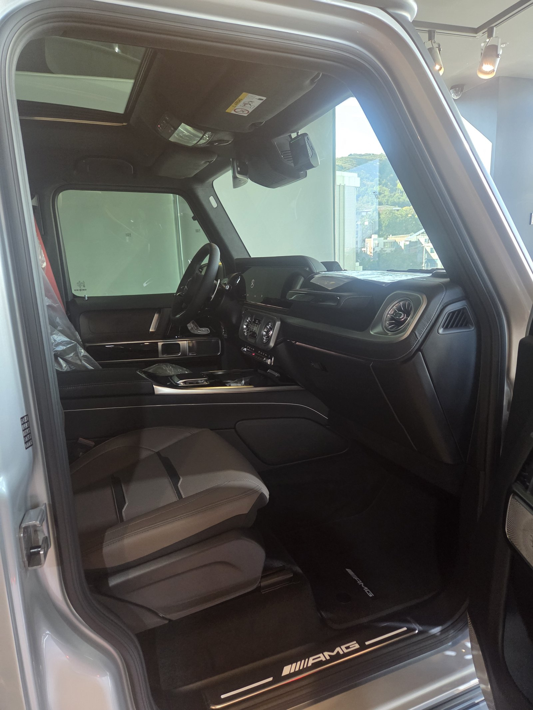
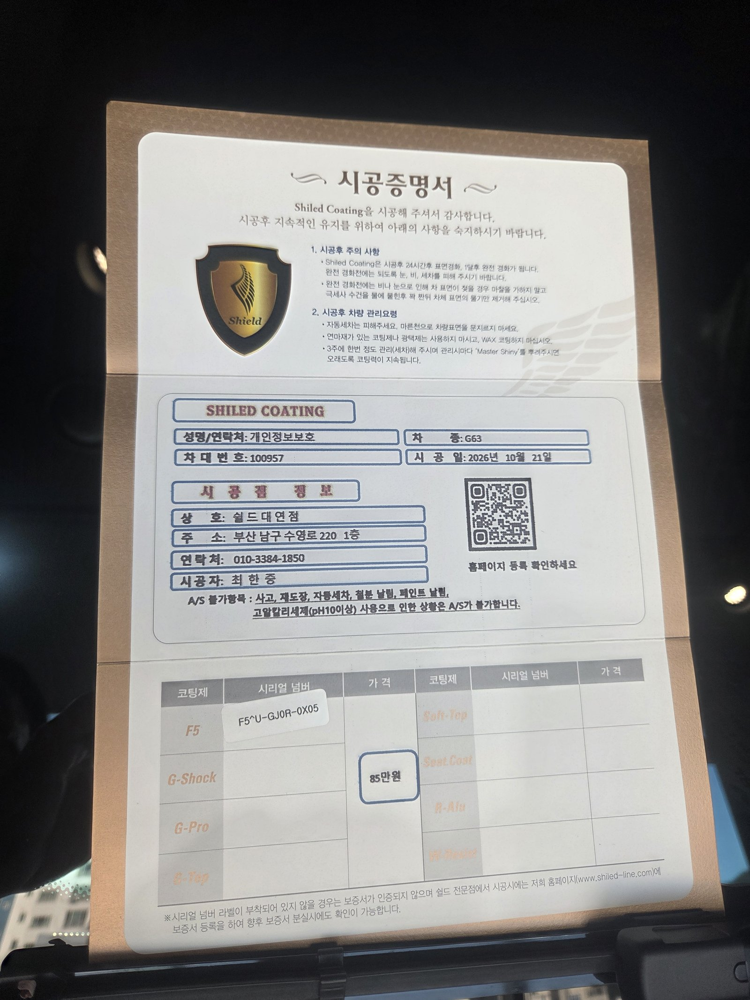

벤츠 AMG G63, 실버 신차입니다.
창가로 낮 빛이 들어오는 시간에 마무리한 한 대입니다.
출고 전 F5로 진행한 부산 유리막코팅 기록입니다.

실버 G63은 어디를 보고 점검하나요?
메탈릭 입자가 고르게 반짝이는지 봅니다.
실버는 잔기스가 잘 안 보이는 색입니다.
대신 코팅제가 뭉친 자리는 입자가 탁하게 보입니다.
창가 빛을 면마다 비스듬히 받아 보닛과 도어 평면을 확인했습니다.



파나메리카나 그릴과 레드 캘리퍼 주변은요?
G63은 세로 바가 촘촘한 파나메리카나 그릴이 들어갑니다.
바 사이는 좁아서 코팅제가 고이기 쉽습니다.
휠 안쪽으로 보이는 레드 캘리퍼와 펜더 플레어 경계도 따로 닦아냈습니다.



기술자의 팁
G클래스는 루프와 보닛 윗면이 높아 세차할 때 손이 덜 닿습니다. 발판을 쓰고, 타월은 힘을 빼고 한 방향으로만 밀어 주십시오.
G63 실버에 F5를 올린 이유
F5는 색감의 깊이와 글로시함에 특화된 코팅입니다.
실버는 F5를 올리면 메탈릭 입자가 더 맑게 살아납니다.
코팅제는 대표가 직접 개발·제조한 제품입니다.
이번 부산 유리막코팅은 F5 싱글로 진행했습니다.


시공증명서도 함께 드립니다
모든 시공 차량에 시공증명서를 드립니다.
차종·시공일·코팅제 시리얼 번호가 적혀 있고, 홈페이지에 등록해 보증을 받으실 수 있습니다.

차종·시공일·코팅제 시리얼이 기재된 시공증명서
자주 묻는 질문
Q. 실버 차량에도 코팅 차이가 보이나요?
A. 실버는 잔기스가 잘 안 보이는 색이라 차이가 작다고 생각하시기 쉽습니다. 코팅 후에는 메탈릭 입자가 더 또렷해지고 오염을 씻어내기 쉬워집니다.
Q. G63 그릴과 휠은 어떻게 마무리하나요?
A. 세로 바가 촘촘한 파나메리카나 그릴은 바 사이를 따로 닦아냅니다. 휠과 브레이크 캘리퍼 주변은 도장면 코팅과 구분해 정리합니다.
Q. G클래스는 코팅할 때 무엇이 까다롭나요?
A. 보닛·도어·스페어타이어 커버가 모두 각진 평면이라 코팅제 잔여물이 남으면 바로 보입니다. 모서리와 경첩 주변을 따로 닦아냅니다.
Q. 왜 출고 전에 코팅하나요?
A. 도장면이 가장 깨끗할 때 올린 코팅이 가장 오래갑니다. 운행과 세차로 잔기스가 생기기 전에 입혀두는 것이 핵심입니다.
Q. 쉴드광택 위치와 예약은 어떻게 하나요?
A. 부산 남구 유엔로220 1F 쉴드광택입니다. 예약·상담은 010-3384-1850, 대표 최한중이 직접 상담하고 책임 시공합니다.
새 차일수록 시작점이 다릅니다. 가장 깨끗할 때 입혀두십시오.
제품을 직접 만드는 사람이 직접 시공합니다.
부산에서 신차 유리막코팅을 고민 중이시면 편하게 연락 주십시오.
어떤 차를 타냐보다 어떻게 타냐가 중요합니다~!
시공 중에는 전화를 받지 못할 때가 많습니다.
카카오톡으로 차종과 원하시는 시공을 남겨주시면 확인 후 답변드립니다.
쉴드광택 · 부산 남구 유엔로220 1F · 대표 최한중